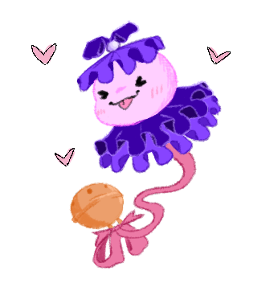
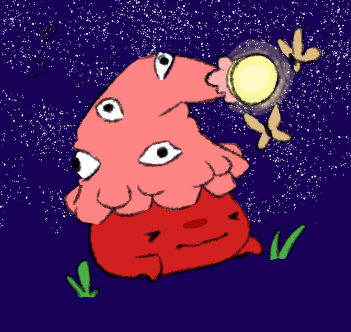
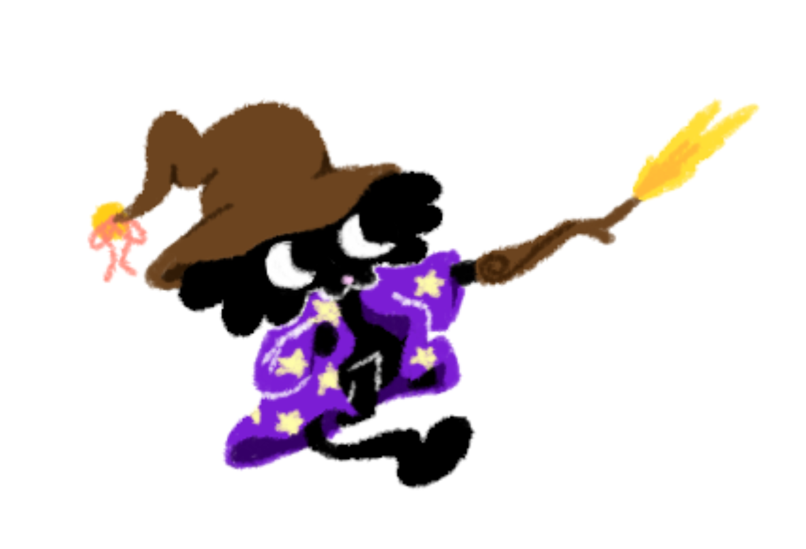

Welcome to my art page! This is where I will post my art
for people who are interested. Many of the pictures will be
from my ArtFight page linked below:
If you like my ArtFight page, feel free to follow me!
Here is a collection of some of my favorite art (made by me ofc).



I like to use the program Magma for my art because
it offers my favorite brush, although the program itself is a little
underdeveloped at the moment. I still make it work, but it would be nice to
see some QOL added to it. The program itself is made for collaborative
drawing so it makes sense that its not fully developed as a solo drawing program
yet!